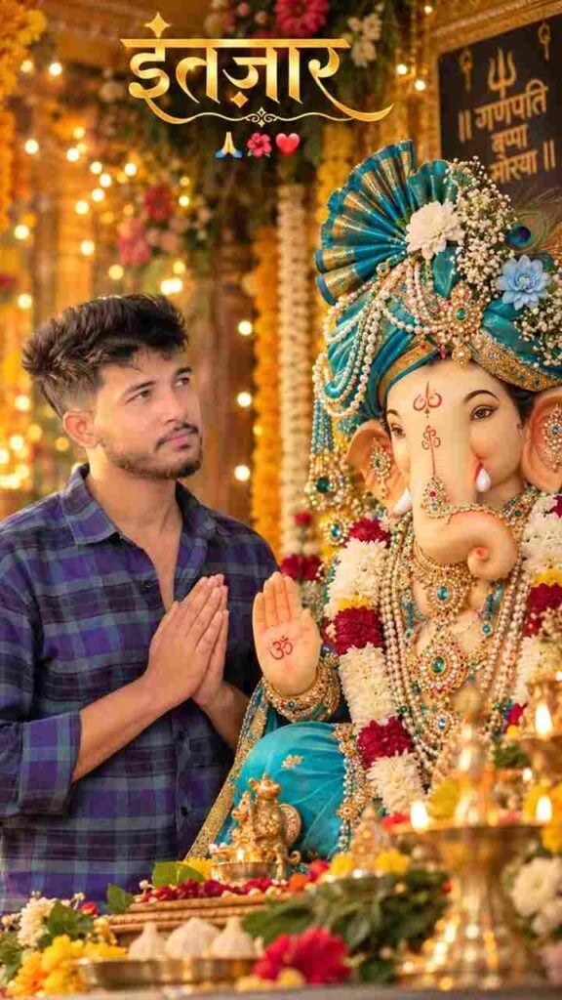
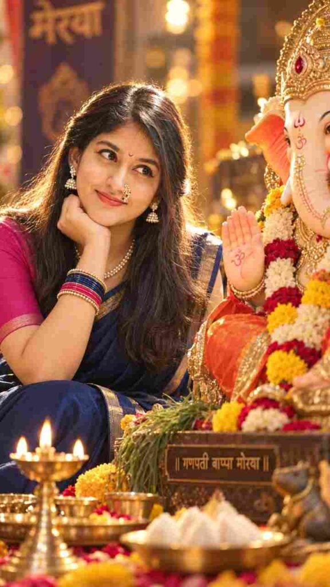
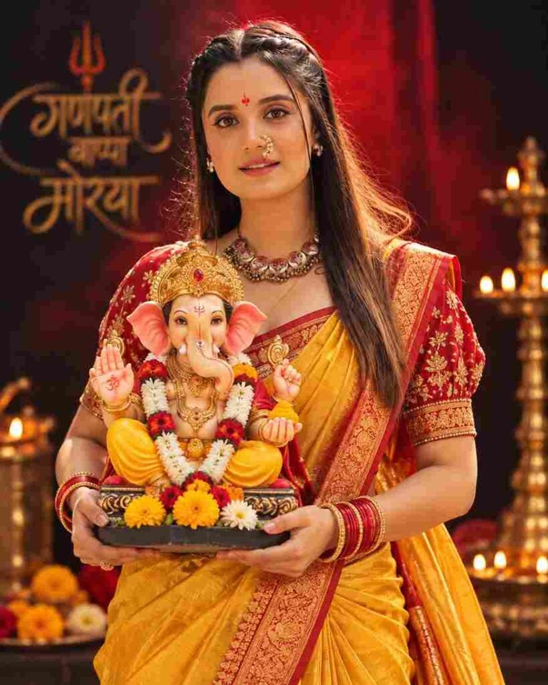
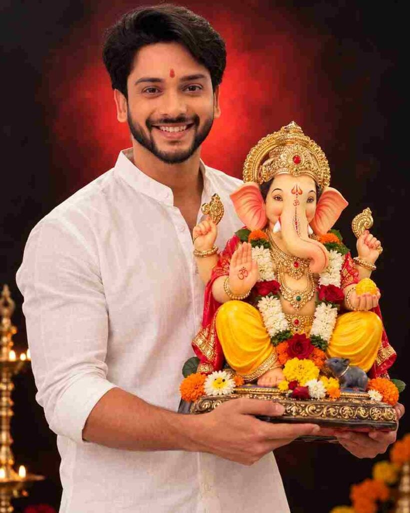

Looking for a Ganesh Chaturthi AI photo prompt to turn your own picture into a devotional Ganpati Bappa portrait? Ganesh Chaturthi 2026 is the perfect time to create a festive AI photo that you can post on Instagram, set as your WhatsApp status, or simply keep as a memory of Ganpati Bappa’s arrival at home. Instead of hiring a photographer or spending hours on manual photo editing, you can now use AI photo editing tools to place yourself beside a beautifully decorated Ganesha idol in seconds.
Below are 5 ready-to-use Ganesh Chaturthi AI photo prompts for 2026 — for boys and girls — that keep your real face while adding a beautifully decorated Ganesha idol, festive lighting, traditional jewelry, and devotional styling. Every Ganesh Chaturthi AI photo prompt in this collection is written specifically to preserve facial identity, so the final photo still looks like you, not a random AI-generated face. Just copy a prompt, upload your photo to ChatGPT, Gemini, or Nano Banana, and generate your Ganpati photo in seconds.
Ganesh Chaturthi AI Photo Editing Prompts
Pick any prompt below, copy it, and paste it into your AI photo editing tool along with a clear photo of your face. Each prompt below is designed for a specific look — devotional, traditional saree, festive kurta, or studio-style — so scroll through all 5 and pick the one that matches the mood you want for this year’s Ganpati Bappa Morya photo.
1. Devotional Portrait for Boys — Praying Beside Ganpati Bappa
Want more awesome prompts?
Join our community and get the latest viral prompts daily.
Follow on Instagram
This prompt creates a peaceful, prayerful moment beside Ganpati Bappa, with folded hands and a soft, respectful expression. The elegant Hindi text overlay (“इंतज़ार”) adds a personal, caption-style touch that works great as a WhatsApp status or Instagram Story on the day Bappa arrives home. The warm bokeh lighting and traditional turquoise-and-gold decorated idol give it a premium, festive feel without looking artificial.
Best for: vertical Instagram/WhatsApp status | Ratio: 9:16 | Works with: ChatGPT, Gemini, Nano Banana
2. Ganpati Bappa Saree Look for Girls

This is the most traditional and detailed prompt in the collection, built for a classic Maharashtrian saree look — navy-blue silk saree, pearl nath, pearl jewelry, and a soft golden rim light that mimics a real diya-lit mandap. Because the prompt calls out exact facial features (eye shape, nose, lips, hairline), it does a strong job of keeping your identity intact while still giving the photo a cinematic, magazine-style finish.
Best for: traditional saree look | Ratio: 9:16 | Works with: ChatGPT, Gemini, Nano Banana
3. Ganpati Bappa Kurta Look for Boys
Built specifically for men, this prompt explicitly instructs the AI not to feminize or alter facial features — a common problem with generic AI photo prompts. It pairs a navy-blue silk kurta with minimal gold accessories for a classy, understated festive look, and the “no facial restructuring” instruction near the end helps keep the output realistic instead of overly airbrushed.
Best for: festive kurta portrait | Ratio: 9:16 | Works with: ChatGPT, Gemini, Nano Banana
4. Ganpati Bappa Studio Portrait for Girls — Yellow Nauvari Saree

Unlike the home-mandap style prompts above, this one creates a clean, dramatic studio portrait — a plain dark background with a soft red glow, perfect if you want a bold, poster-style photo instead of a candid festival scene. The vibrant yellow Nauvari saree paired with heavy gold jewelry makes this a strong choice for a profile picture or a printed Ganpati Bappa photo frame.
Best for: studio-style festive portrait | Ratio: 4:5 | Works with: ChatGPT, Gemini, Nano Banana
5. Ganpati Bappa Studio Portrait for Boys — White Shirt

The simplest prompt in the collection, this one works well as a starting point if you’re new to AI photo editing. A plain white shirt keeps the focus entirely on the Ganesha idol and your expression, making it a quick, reliable option when you don’t want to fuss over saree drapes or jewelry details.
Best for: clean studio-style festive portrait | Ratio: 4:5 | Works with: ChatGPT, Gemini, Nano Banana
Which Ganesh Chaturthi AI Photo Prompt Should You Choose?
If you’re unsure which prompt to pick, here’s a quick way to decide. For an Instagram Story or WhatsApp status you’ll post today, go with the vertical 9:16 prompts (1, 2, or 3) since they’re already cropped for full-screen mobile viewing. If you want a photo for your Instagram feed, profile picture, or a printed frame, the 4:5 studio-style prompts (4 or 5) work better because they show more of the outfit and the Ganesha idol in one frame.
If this is your first time trying an AI photo prompt, start with prompt 1 or 5 — both are simpler, shorter prompts that are less likely to confuse the AI tool. Once you’re comfortable with the process, try the more detailed saree and kurta prompts (2 and 3), which give more realistic, magazine-style results but need a clearer reference photo to work well.
How to Create a Ganesh Chaturthi AI Photo (Step by Step)
- Choose a clear, high-quality portrait where your face is fully visible.
- Open an AI photo editing tool that supports reference images (ChatGPT, Gemini, or Nano Banana).
- Upload your selected photo as the reference image.
- Copy and paste any Ganesh Chaturthi AI photo prompt from above.
- Generate the AI photo.
- Check the face, clothing, hands, jewellery, and Ganesha idol for accuracy.
- Review the decorations, lighting, and background.
- Make small prompt adjustments if something looks off.
- Generate the final image and save it to your device.
Tips for the Best Ganesh Chaturthi AI Photo
- Use a well-lit, front-facing photo for the most accurate face match.
- Avoid sunglasses, filters, or photos where the face is partially covered.
- If the AI changes your facial features too much, add “preserve exact facial identity” to the prompt.
- Try more than one prompt to see which festive style suits you best.
Common Mistakes to Avoid
A few small mistakes are responsible for most bad results with Ganesh Chaturthi AI photo prompts. Here’s what to watch out for:
- Blurry or low-resolution reference photo: the AI copies details from your photo, so a blurry input almost always leads to a blurry or distorted face in the output.
- Side-angle or half-face photos: prompts work best with a front-facing photo where both eyes, the nose, and the mouth are clearly visible.
- Editing the prompt too much at once: change one detail at a time (like clothing color or background) instead of rewriting the whole prompt, so you can tell what caused a bad result.
- Ignoring the hands and jewelry: AI tools sometimes distort hands or add extra fingers — always zoom in and check hands, bangles, and the Ganesha idol’s details before saving.
Why Do We Celebrate Ganesh Chaturthi?
Ganesh Chaturthi honors Lord Ganesha, worshipped as the remover of obstacles and the god of wisdom, knowledge, and new beginnings. The festival marks his birth and is celebrated with prayers, rituals, devotional songs, and the installation of Ganesha idols in homes and public places. People seek Ganesha’s blessings for happiness, prosperity, and success, and the festival brings families and communities together through celebration and devotion.
The festival, also known as Ganeshotsav or Vinayaka Chaturthi in different parts of India, typically lasts between 1 and a half to 11 days, ending with the immersion of the idol on Anant Chaturdashi. Homes and public pandals are decorated with flowers, lights, and rangoli, and families gather each evening for aarti. Many people now also use a Ganesh Chaturthi AI photo prompt to create a festive portrait alongside their idol and share the celebration with friends and family online, especially when everyone can’t be physically present for the festival.
Frequently Asked Questions
Which AI tools work best for Ganesh Chaturthi photo prompts?
These prompts work well with ChatGPT (with image upload), Google Gemini, and Nano Banana. Any AI tool that supports uploading a reference photo and generating an edited image will work.
Are these Ganesh Chaturthi AI photo prompts free?
Yes, all 5 prompts on this page are completely free to copy and use. You only need access to an AI photo editing tool.
Will the AI photo look exactly like me?
Each prompt is written to preserve your facial features, skin tone, and identity from the reference photo. Results can still vary slightly depending on the AI tool, so use a clear, well-lit photo for the best match.
Can I use these prompts for both boys and girls?
Yes. This collection includes separate prompts designed for men and women, covering saree looks, kurta looks, and studio-style portraits with Ganpati Bappa.
What image ratio should I use?
Most prompts here are set to a 9:16 vertical ratio, ideal for Instagram Stories and WhatsApp status. Two prompts use a 4:5 ratio, which works well for Instagram feed posts.
Why does the AI-generated Ganesha idol or my face look distorted?
This usually happens when the reference photo is blurry, low-resolution, or taken from an angle. Use a clear, front-facing, well-lit photo, and if the result still looks off, try regenerating the image or slightly simplifying the prompt.
Can I add Hindi text like गणपति बाप्पा मोरया to my AI photo?
Yes. You can add a line to any prompt such as: add elegant Hindi text गणपति बाप्पा मोरया at the top or bottom of the image, similar to the Hindi text used in prompt 1 above.
Do I need a paid subscription to use these prompts?
No. ChatGPT, Gemini, and Nano Banana all offer free tiers that support image uploads and prompt-based editing, though free plans may have daily generation limits.
More Devotional AI Photo & Video Prompts
If you enjoyed these Ganesh Chaturthi prompts, you might also like our Divine Maa Parvati-Inspired AI Video Editing Prompt and the Radha Krishna Divine Love Story AI video prompt for more devotional styles. For everyday aesthetic looks beyond festivals, check out our Aesthetic Photo Editing Prompts for Boys.
Final Words
These Ganesh Chaturthi AI photo prompts make it easy to create a beautiful festive portrait using your own photo, without needing a professional photoshoot or complex editing skills. Pick a prompt that matches your style, upload a clear reference photo, and generate your Ganpati Bappa portrait in minutes. Review the result carefully, tweak the prompt if needed, and try a few different styles to find your favorite.
Ganpati Bappa Morya! Wishing you a joyful and blessed Ganesh Chaturthi 2026 — share your AI-generated devotional portrait with family and friends this festive season.